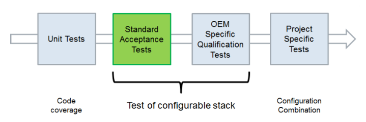
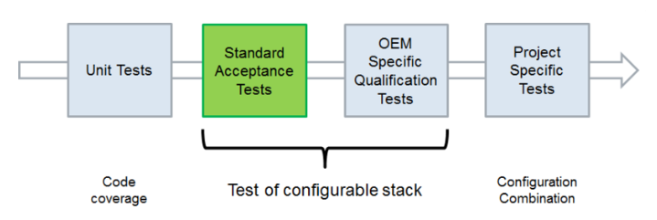
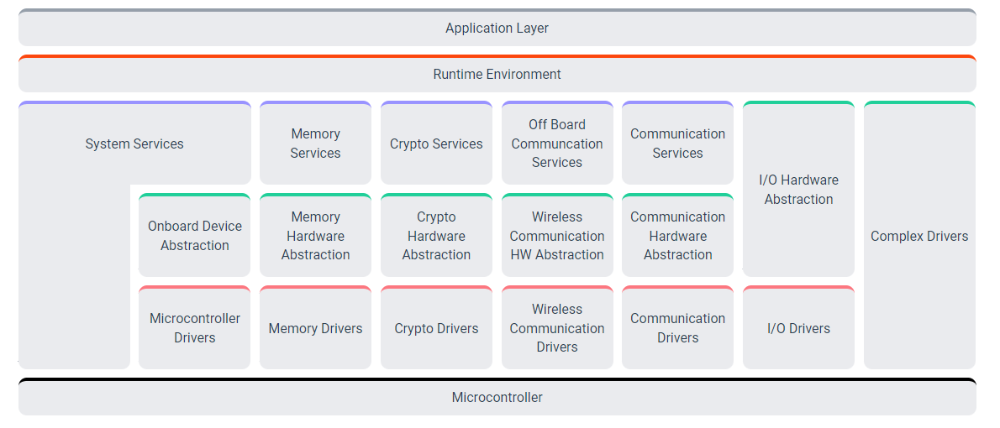
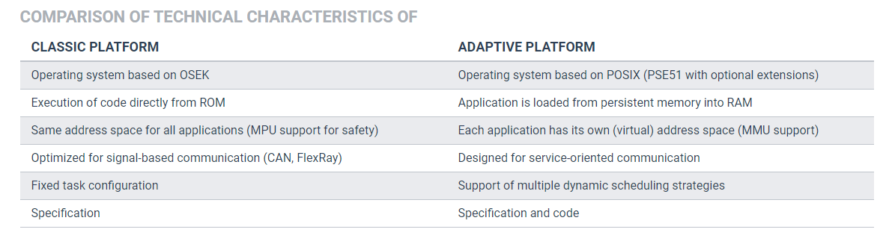

Appendix - 3 AUTOSAR Software Framework
AUTOSAR Software Framework 的内容
截止目前，最新的发布的版本是R20-11，主要包含APPLICATION INTERFACE、ACCEPTANCE TESTS、CLASSIC PLATFORM、ADAPTIVE PLATFORM、FOUNDATION五个部分。

APPLICATION INTERFACE 为了使软件的设计和实现独立于不同的硬件和ECU（Electronic Control Unit），AUTOSAR 标准化了乘坐舒适性、动力总成、动力传动、底盘控制、乘员和行人安全以及 HMI、多媒体和远程信息处理系统的应用接口。包含语法和语义的定义。

ACCEPTANCE TESTS 验收测试，使用AUTOSAR的测试用例进行应用与通信总线级别的测试。
 
CLASSIC PLATFORM AUTOSAR的安全硬实时嵌入式系统解决方案，区分了三层软件抽象的层级结构: application, runtime environment (RTE) and basic software (BSW)。
ADAPTIVE PLATFORM AUTOSAR的高性能计算ECU解决方案，用于为自动驾驶等场景构建fail-operational操作系统。实现了Adaptive Applications (ARA)的运行时，和CLASSIC PLATFORM的RTE区别是ADAPTIVE PLATFORM的服务和客户端是运行时动态链接的。

STANDARDS FOUNDATION Classic Platform 和 Adaptive Platform 共用部分被发布为一个单独的标准，为了确保AUTOSAR平台间的互操作，主要包含common requirements和technical specifications（例如AUTOSAR平台间的protocols）两部分。

CLASSIC PLATFORM和ADAPTIVE PLATFORM的技术特点比较

SOSA面向服务的软件架构(Service Oriented Software Architecture)
普通的OS例如Android，在某些场景下不能满足汽车的功能安全需求。此时AP登上历史舞台，作为HPC（High Performance Controller）类型ECU的重要组成部分，AP所做就是统一管理下属OS以及周边资源，使得系统运行时的一切调度、状态和资源消耗都处在一个可控的范围内，以满足车载安全性、确定性的要求。当资源丰富时，可选择的余地就会大一些，比如可以充分利用多核异构架构来处理复杂场景，使用Hypervisor等虚拟化技术，使CP、AP和非AUTOSAR系统共同存在于HPC中。
Adaptive AUTOSAR这个基于服务理念的中间件，就是一种SOSA。它体现了基于服务的架构思想：运行环境（ara）分成了Foundation和Service两部分。
基于信号和基于服务这两种通信方式如何结合起来，是对新一代E/E架构提出的挑战。Adaptive AUTOSAR这个基于服务理念的中间件，是我们实现SOA的一种不错的选择。
篇幅有限，没有展开举例Adaptive AUTOSAR在SOA上的应用。
目前主流的autosar供应商为
vector:工具链齐全，好用，技术实力最强，软件质量最高，但是不够灵活，价格特高,如果开发途中有较大变更，将有很大延期可能。特别要说明的是，vector将重构MCAL，软件包也是国外团队适配好，国内提供技术支持，技术实力和软件质量可见是相当不错的.一般vector的价格比其他厂商高2倍以上
etas:博世集团子公司，工具链齐全，较为好用，质量不太好，尤其是中国技术团队，水平相对欧洲差太多，他们正在做本土化，然而中国技术人员对底层不太懂，如MCAL和编译 相关，因此想和他们合作，必须自己把关底层。功能安全相关做的也不怎么样。但是他们打价格战，合作方式灵活。
eb:大陆集团子公司。有BSW，MCAL工具链，但是没有ASW工具链，因此，想和其合作与购买第三方的ASW工具链，如autosarbuilder，但是某些第三方为美国公司，软件会受到制裁而且三方合作会给项目带来更多风险。eb在中国的技术团队人数较少，技术能力有限，因此目前主要是由国外团队做集成，国内团队做技术支持。如果不是缺ASW工具，我觉得他比ETAS好，当然他的价格贵于ETAS.
Mentor:西门子子公司。工具链齐全，中国技术人员规模次与vector和etas。其工程包主要由国外团队适配，因此软件质量比etad好，但是其知名度都不如etas/eb，给我的感受是他比etas知名度低，灵活性不如etas，价格和etas相似，但是软件质量，专业度比ETAS强。
KPIT:印度的公司，价格是见人说话，目前主要做集成外包，以前的技术实力还可以，目前完全是不入流的。中国基本上没有技术人员，没有OEM与其合作。
华为:国内厂家国际autosar组织不认可，如果你的产品想和国际厂商合作就不行了
DS
MentorGraphics(Siemens)。
在国内，依托国家“核高基”课题，i-Soft公司也开发了符合AUTOSAR标准的操作系统和基础软件，并成功应用于自主品牌和新能源量产车型。